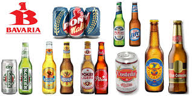
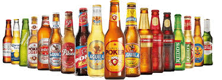

Las cervezas de Bavaria S.A. son algunas de las más reconocidas en Colombia y hacen parte de la cultura y tradición del país. Esta empresa, fundada en 1889, se dedica a la producción y comercialización de bebidas como cerveza y malta, y actualmente pertenece al grupo internacional AB InBev. Entre sus marcas más populares se encuentran Águila, Poker, Club Colombia y Costeña, cada una con diferentes estilos y sabores que se adaptan a los gustos de los consumidores. Bavaria es una de las empresas líderes en el mercado cervecero del país y ha tenido un gran impacto en la economía, generando empleo y promoviendo el desarrollo industrial.

